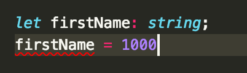
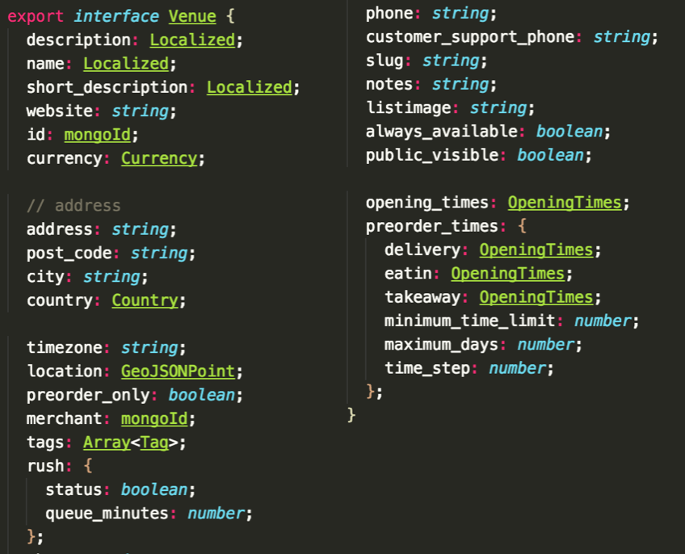
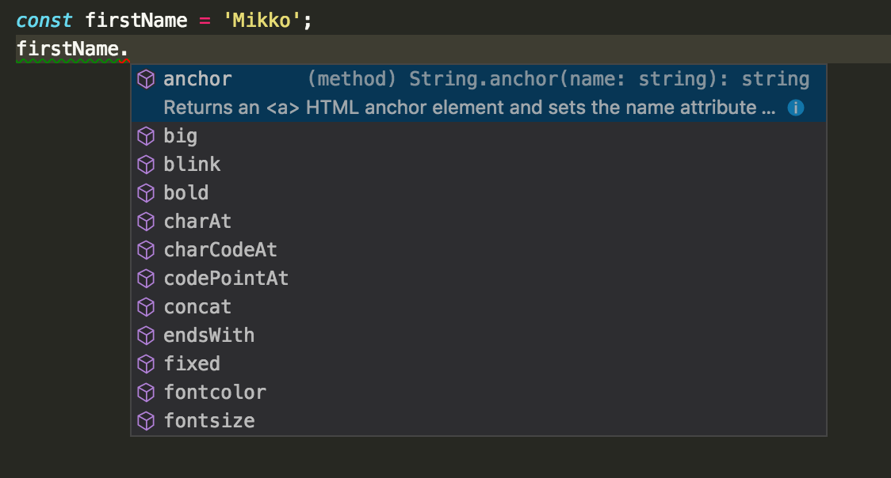
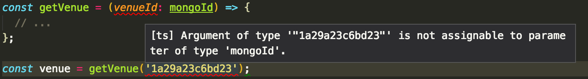

Typescript
why and how
What is Typescript?
- Superset of ES6
- Optional type annotations
- generics
- interfaces/structs
- type inference
- nullability
- Compile time type checking
- Transpiler targeting ES3 – ESNext
Why?
- Offload more error checking to your tools
- Explicit & simultaneous data documentation
- Editor/IDE integration
➡ easier to maintain and less to remember
Typescript vs Flow
| Typescript | Flow |
|---|---|
| Microsoft | |
| Tooling | Fancier type system |
| Compiler | Checker |
| Plenty of lib support | Less plenty |
| VS Code | Atom/Nuclide |
| ✨Google approved✨ | 💩 |
examples
type annotations

ERROR in ./src/modules/venue/selectors.ts
(9,1): error TS2322: Type '1000' is not assignable to type 'string'.
type annotations
 works nice for documenting backend responsesinferred types
parameter types
I'm in! How?
Javascript is already valid Typescript!
mv code.js code.ts
😎
ok that actually doesn't do much
except editor support
> yarn add -D typescript ts-loader
Where should I start?
- It's easiest to add types to code with few references to external code, such as utils or reducers
- Types bring most benefits when applied to complex data types or convoluted data flow
- Also, functions that are accessed from many places
Caveats! Library support
- For 100% functionality, needs first party support from libraries
- Third party typings available from Definitely Typed project 💕
- Worst case, write type declarations yourself
- mega-worst case,
declare module 'foo';andanytype
Caveats! Tool support
Typescript is a different superset of ES6 than Babel:

Caveats!
Not compatible with React proptypes
➡ double declarations or no runtime type checking
Summary
- Detect bugs early & programmatically
- Static types are good for documentation and maintainability
- You can try it out without fully committing
Verdict?
✅ strongly recommended